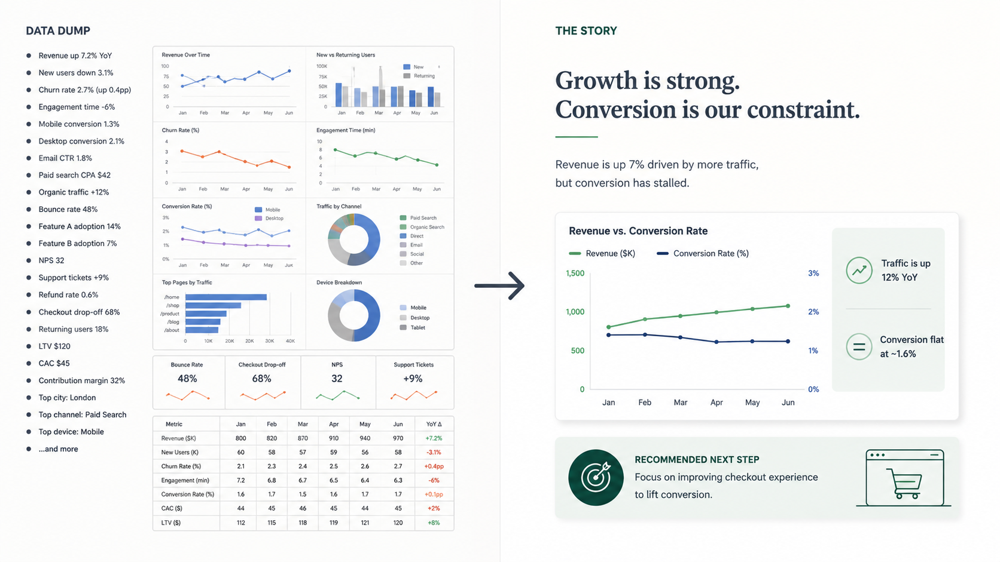

2.3 データをストーリーへ変える
日本語版について
このページは英語版 Marketing Science in Python のAI翻訳です。英語版を正本とし、差異がある場合は英語版を優先してください。コード、Notebook、画像内の文字は英語のままです。 英語版を読む
分析の最後には、仕事の内容が変わります。分析中は、多くの説明候補を調べました。ここからは反対に、意思決定者が必要とする少数の発見を選び、意思決定できる順序に並べます。
ここでいうストーリーテリングは、ドラマを加えることではありません。削ることです。

意思決定へ戻る
資料を作る前に、Section 2.1の問いへ戻ります。誰が意思決定するのでしょうか。その人が決めるためには、何を知る必要があるでしょうか。
経営層が必要とするのは、結論と、それが意思決定に何を意味するかです。チャネル責任者には診断の詳細が必要です。データチームには仮定と頑健性確認が必要です。一つの資料で3者すべてを満足させようとすると、誰にとっても使いにくくなります。
形式も重要です。ライブのプレゼンテーションなら、質問に応じて詳細を追加できます。回覧される文書では、背景と重要な留保をページ上に記載する必要があります。
広く探索し、狭く説明する
分析中は、KPIツリーのすべての枝を調べます。そうすべきです。しかし、調べた枝をすべて見せてはいけません。
Knaflicは、分析を、わずかな真珠を見つけるために多くの牡蠣を開けることにたとえています。オーディエンスには真珠を見せます。牡蠣をもう一度開けさせてはいけません。
グラフを含める基準は、「作るのに時間がかかったか」ではありません。「このグラフがなくても、オーディエンスは結論を理解し、証拠を判断し、意思決定できるか」です。できるなら、そのグラフは付録へ移します。
これは、不都合な証拠を隠すという意味ではありません。結論を弱める情報と、実質的な不確実性は、メインのストーリーに含めます。目的は焦点を絞ることであって、主張を押し通すことではありません。
このセクションでは、Cole Nussbaumer KnaflicのStorytelling with Dataから、探索的分析と説明的分析の違い、Big Idea、アクションタイトル、水平ロジックと垂直ロジックという4つの考え方を取り入れています。以下の「発見 → ビジネス上の意味 → 推奨する次の一手」という形は、本書がマーケティング向けに応用したものであり、彼女のものではありません。データコミュニケーションと可視化を深く学ぶために、私が最初に薦める本です。
最初にBig Ideaを述べる
結論を一文で言えるでしょうか。KnaflicはこれをBig Ideaと呼びます。 マーケティング分析では、実務上、次の形になります。
発見 → ビジネス上の意味 → 推奨する次の一手
たとえば、次のようになります。
「第4四半期の未達は顧客獲得ではなくリテンションの問題であるため、回復施策はリテンションから始めるべきです。第2四半期のプロモーションコホートを対象に、再活性化施策をテストします。」
この一文を書けないなら、資料の準備はできていません。分析が終わっていないか、複数のストーリーを同時に伝えようとしています。
そして、その一文から始めます。分析した順序で説明してはいけません。標準の順序は、結論 → 証拠 → 必要に応じた詳細です。
グラフにメッセージを担わせる
グラフのタイトルには、グラフに何が含まれるかではなく、オーディエンスが何を理解すべきかを書きます。Knaflicはこれをアクションタイトルと呼びます。
| 説明的なタイトル | アクションタイトル |
|---|---|
| 顧客タイプ別売上 | 第4四半期の隔たりは顧客獲得ではなく既存顧客にある |
| コホート別購入頻度 | 第2四半期のプロモーションコホートで購入頻度の落ち込みが最も大きい |
| キャンペーンROAS | 利益基準を上回るのはキャンペーンBだけである |
グラフ自体にも同じルールを適用します。一つのグラフで伝える要点は一つです。比較に役立たないものは取り除きます。背景情報は目立たせず、色、線の太さ、ラベル、注釈を使って証拠へ注意を向けます。オーディエンスに結論を自力で発見させてはいけません。
例：売上診断から意思決定へ
第4四半期の売上は、計画$26.0Mに対して$24.2Mでした。マーケティング責任者は、回復施策を顧客獲得とリテンションのどちらに向けるか決めなければなりません。
図 2 の診断ツリーが、すでに必要な分析を行っています。新規顧客売上は$10.8Mで、計画を11%上回っています。既存顧客売上は$13.4Mで、計画を18%下回っており、その要因は16%低下した購入頻度です。コホートまで掘り下げると、第2四半期のプロモーションで獲得した顧客の購入頻度は25%低下しています。
変更前：分析順に並べた資料
- 第4四半期の売上を計画および前年と比較
- チャネル別売上
- 顧客タイプ別売上
- 商品カテゴリー別売上
- トラフィックとコンバージョン率
- 平均注文金額
- コホート別購入頻度
- 要約：既存顧客の購入頻度が低下しており、特に第2四半期のプロモーションコホートで大きい
結論が8枚目になって初めて現れます。2、4、5、6枚目は、調べた結果、問題がなかった枝です。確認する必要はありましたが、見せる必要はありません。
変更後：意思決定順に並べた資料
- 第4四半期の隔たりは顧客獲得ではなく既存顧客にある。新規顧客売上は計画を11%上回り、既存顧客売上は18%下回っている
- 既存顧客売上が低下したのは、1回当たりの支出が減ったからではなく、購入頻度が下がったからである
- 第2四半期のプロモーションコホートで購入頻度の低下が最も大きい。全体の16%に対して25%である
- 推奨：回復施策をリテンションへ集中し、このコホートに対する再活性化テストから始める。この診断は、第2四半期のプロモーションが低下を引き起こしたとは示していない。今後のプロモーションターゲティングを変更するには、因果的な証拠が必要である
チャネル、商品カテゴリー、トラフィックとコンバージョン、平均注文金額は付録へ移します。
分析は同じです。変わったのは、順序、削った枝、そして証拠が何を支持し、何を支持しないかを示す最後の一行です。
送付前の二つの確認
- 水平。 1枚目から最後まで、見出しだけを読みます。それだけで、発見から行動までのストーリーが伝わるか？
- 垂直。 各スライドを単独で見ます。グラフ、数値、注釈など、そのスライドにあるすべての要素が見出しを支えているか？
Part 2では、意思決定から問いへ、問いから診断へ、診断から推奨へ進みました。しかし、診断は因果的な証拠ではありません。Part 3は、このセクションが終わる地点から始まります。マーケティング施策が実際に成果を変えたかどうかを調べます。